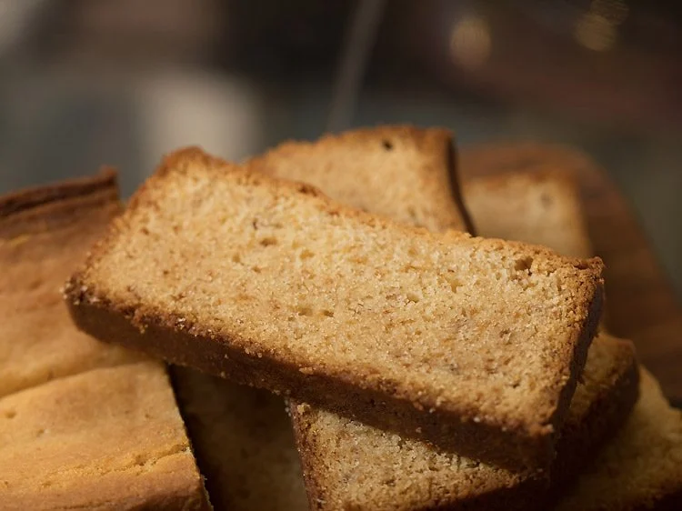
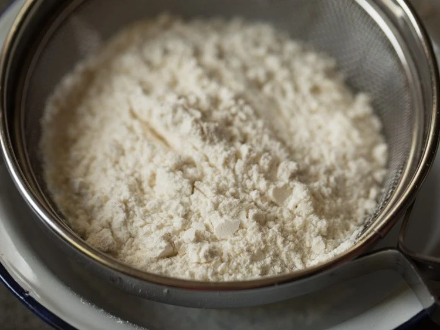
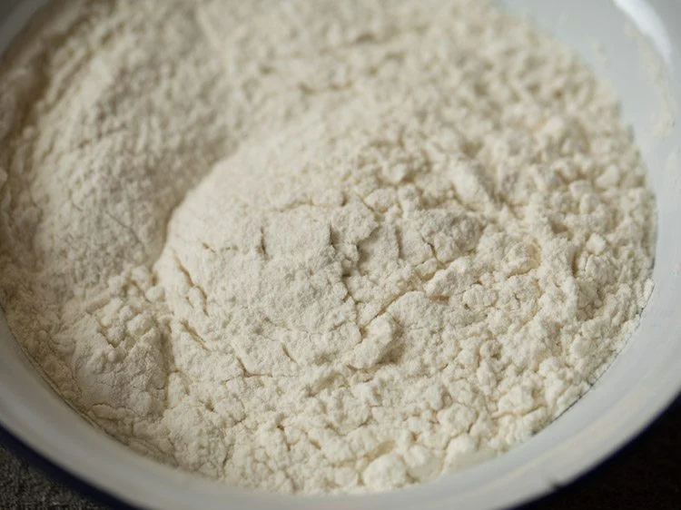
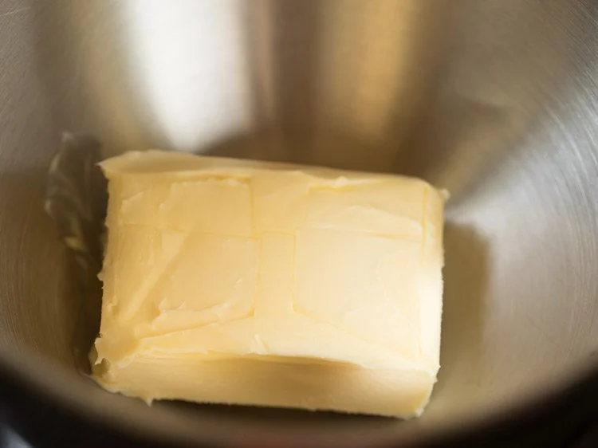
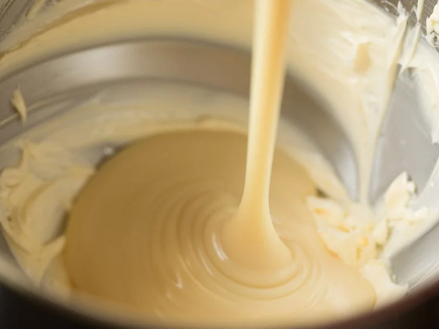
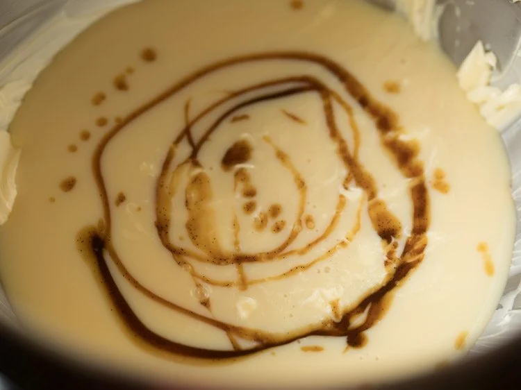
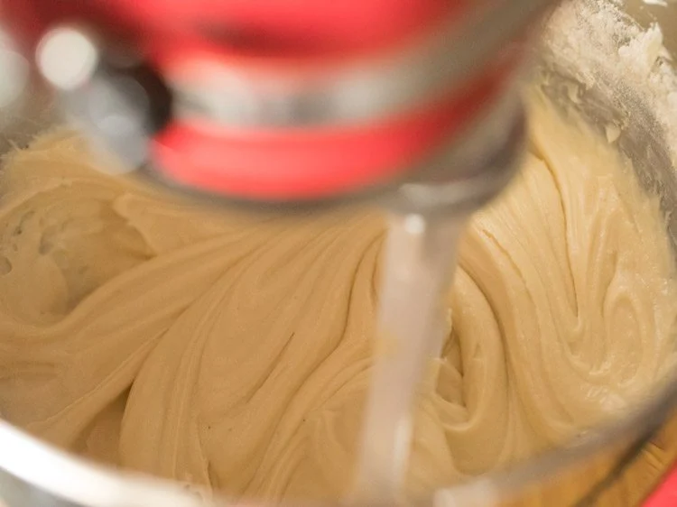

Butter Cake Recipe (Without Eggs)
This Butter Cake recipe without eggs, makes a wonderfully tender, sweet, and slightly dense cake that’s rich with butter flavor. It’s similar in taste and texture to Pound Cake, and is perfect to enjoy as an indulgent snack or dessert. Follow my step-by-step instructions and photos to prepare a delicious butter cake – no eggs needed!
How to make Butter Cake
Sift Dry Ingredients
1. Take all the ingredients and keep them ready:
*200 grams butter (about ¾ of a cup)
*400 grams sweetened condensed milk (or 1 can)
*1.5 leveled cups all-purpose flour (or 188 grams)
*1 teaspoon vanilla extract
2. Keep a sieve on top of a bowl. Add the all purpose flour in the sieve.
3. Now add ⅛ teaspoon salt (2 to 3 pinches). If using salted butter, then skip adding salt.
4. Add 1.5 leveled teaspoon baking powder.
5. Begin to sift the dry ingredients.
6. Keep the sifted dry ingredients aside.
7. Grease a loaf pan measuring 8.5 x 4.5 x 2.5 inches with butter and keep aside. You can also use a round pan of 7 or 7.5 inches diameter.
You can line the pan with parchment paper or butter paper and then grease. Also preheat oven at 170 degrees Celsius, or 335 degrees Fahrenheit.
Whip Butter
8. Take unsalted butter in the stand mixer bowl. The butter should be softened and not hard, but not melted or liquid.
9. With the paddle attachment attached to the mixer, whip the butter on high speed of 9 to 10 till the butter becomes light and fluffy. Do not over do the beating.
While beating, stop at intervals and scrape off the butter from the sides and add in the center of the bowl.
10. After whipping, the butter should become light and fluffy.
11. Then add 1 can sweetened condensed milk (400 grams) to the whipped butter.
12. Then add 1 teaspoon vanilla extract or ½ teaspoon vanilla essence.
13. Using the stand mixer at low speed of 1, mix everything till blended well.
14. Do not overdo the mixing at this step. Just mix everything well and then stop.
Make Butter Cake Batter
15. Now add the sifted dry ingredients.
16. With a spatula just lightly mix everything so that the flour particles do not fly when you start the stand mixer.
17. On a low speed of 1, mix everything well. Do not overdo the mixing as then gluten strands may form which will ruin the structure of the cake while baking.
18. Just mix well and then stop. If the batter looks very thick, add about ¼ cup milk or as needed and mix again.
19. Now using a silicon spatula, pour the butter cake batter in the greased loaf pan.
20. Shake the pan so that the batter moves and settles down at the sides and bottom. Level the butter cake batter with a spatula.
Bake Butter Cake
21. Bake eggless butter cake at 170 degrees (335 degrees Fahrenheit) in convection oven (convection ovens have a fan).
In an oven without a fan bake at 180 degrees celsius (355 degrees Fahrenheit). Keep the pan in the center rack with the bottom heating element on (bake mode in the OTGs available in India).
22. Since condensed milk is added, this cake browns faster from the edges and top. So cover the top with an aluminium foil. Lightly cover and do not press it on the pan.
Bake for 50 to 60 minutes till the top looks golden. Since temperature varies from oven to oven, keep a check.
Also do not open the oven door many times. Only open after ¾ of the baking is done.
23. Check with a toothpick and it should be clean.
24. Keep the pan on a wired tray for the cake to cool.
25. Once the cake is cooled completely at room temperature, then slice it. This butter cake keeps well outside if the temperature is very cold and freezing.
In an Indian climate, during winters, keep for 1 to 2 days at room temperature. Later keep in fridge.
After keeping in fridge the butter will solidify in the cake. So while serving warm the cake in an oven or keep at room temperature for some time.
26. Serve Butter Cake just plain or sprinkle some powdered sugar or icing sugar on top of the butter cake.